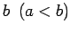
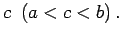

Die Menge ist geordnet, d.h., für je zwei verschiedene rationale Zahlen a und b kann man angeben, welche von beiden kleiner als die andere ist.
Die Menge ist überall dicht, d.h., zwischen je zwei verschiedenen rationalen Zahlen a und  existiert wenigstens eine rationale Zahl  Daraus folgt, daß zwischen zwei verschiedenen rationalen Zahlen unendlich viele weitere rationale Zahlen liegen.